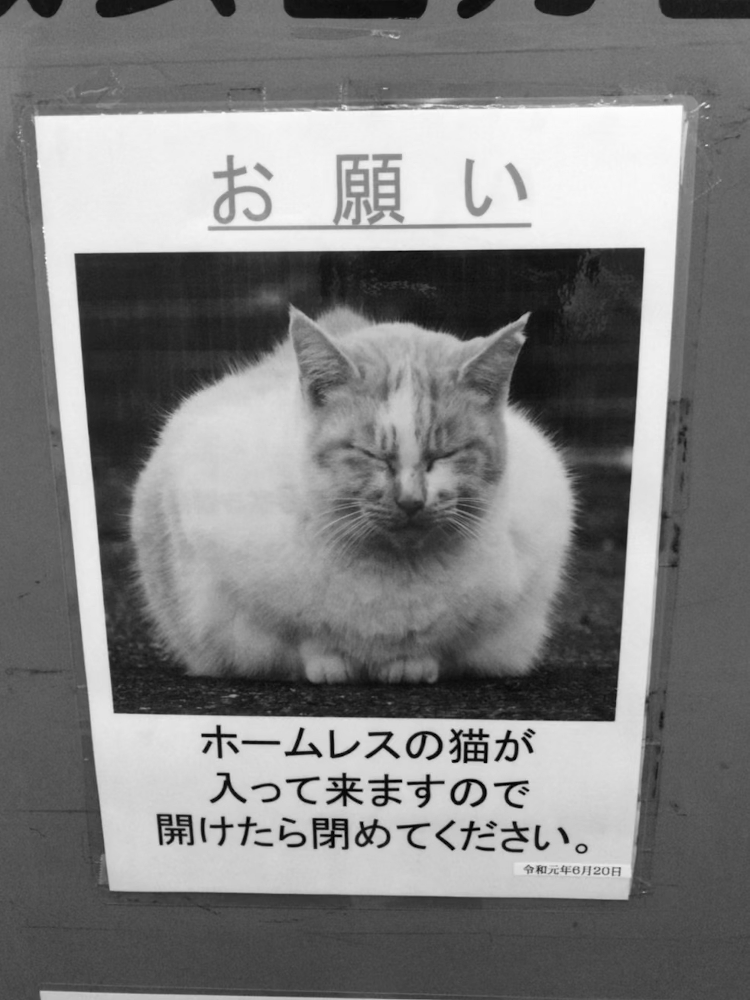
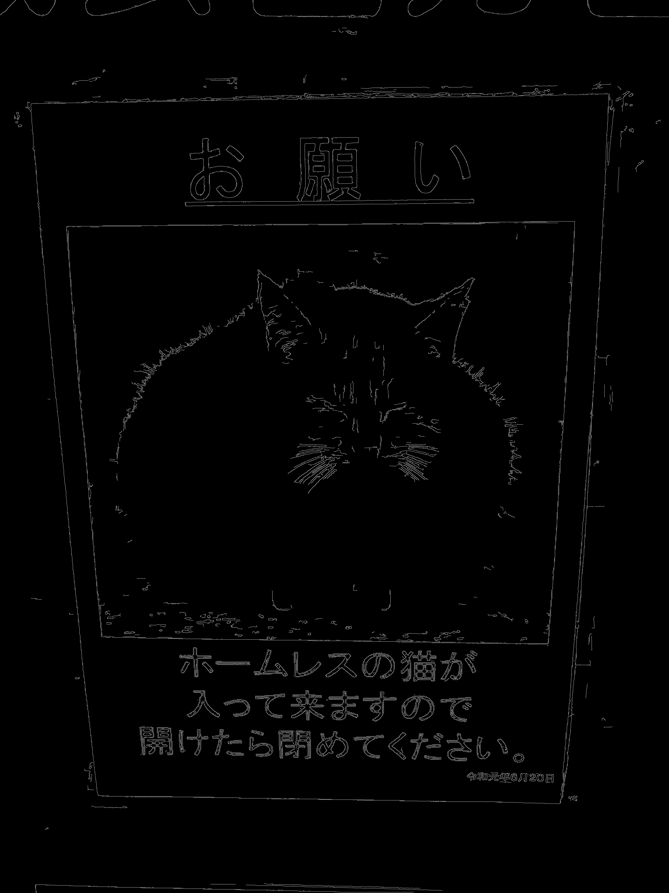
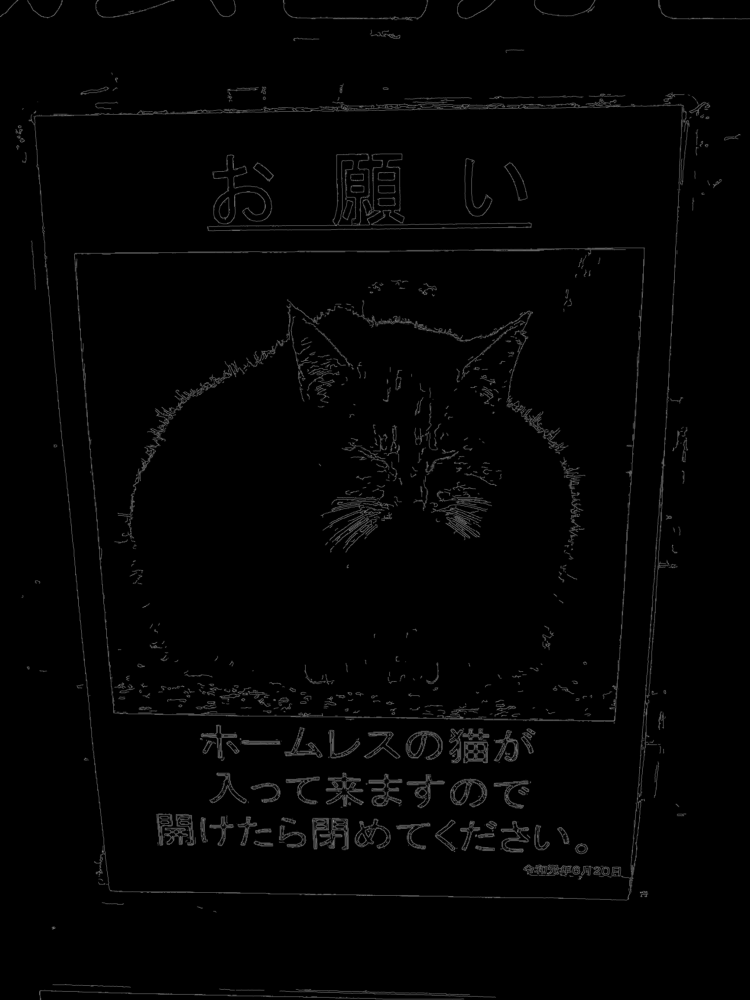

本記事はQrunchからの転載です。
エッジ検出の方法として、Canny法というものがあります。 SobelフィルタやLaplacianフィルタもエッジ検出ができるわけですが、Canny法を使うとより正確に輪郭を検出することが可能です。
Canny法の簡単な原理
勾配の計算
Canny法では画像を平滑化したあとに、Sobelフィルタによって勾配を計算します。 OpenCVでは勾配の大きさは以下の2つのうちのどちらかで計算がなされます。$G_x$と$G_y$はそれぞれ$x$方向、$y$方向の勾配です。
- 2ノルムの場合 $$ \rm{grad}=\sqrt{G_x^2 + G_y^2}. $$
- 1ノルムの場合 $$ \rm{grad}= |G_x| + |G_y|. $$
2ノルムのほうが正確ですが、計算量では1ノルムのほうが優れています。
極大値を求める
次に、計算された勾配から、勾配の極大値を求めます。こうすることで、余計な箇所がエッジとして検出されるのを防ぎます。
しきい値処理
最後に、しきい値処理でエッジとして扱うかどうかを決めます。 Canny法のしきい値は2つあり、1つはこの値より大きければエッジとすると決めるためのもの、もう1つはこの値よりも小さければエッジではないと決めるためのものです。 じゃあ2つのしきい値の間はどうなるの？という話ですが、隣接しているピクセルがエッジと判定されていれば、エッジと判定するようにし、そうでなければエッジではないと判定します。 単純なしきい値でのエッジの判定よりも、より柔軟ですね。
ただし、しきい値が非常に重要になることが容易に想像できます。
OpenCVでCanny法をためす
Canny法は以下のようにして実行できます。
canny = cv2.Canny(img,
threshold1=10,
threshold2=50,
apertureSize=3,
L2gradient=True)
threshold1がしきい値の小さい方で、threshold2がしきい値の大きい方です。apertureSizeにSobelフィルタのサイズを指定しています。また勾配の大きさに2ノルムを使う場合にはL2gradientをTrueにします。
結果を以下に示します。
| 元画像 | canny（2ノルム） | canny（1ノルム） |
|---|---|---|
|  |  |  |
2ノルムのほうがきれいにエッジが取れている気がします。